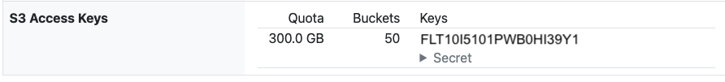

Getting started with S3 and the EIDF S3 Service
Introduction
Amazon Simple Storage Service (S3) is an object storage service developed by Amazon Web Services. However, in the same way that 'Hoover' is used to refer to any 'vacuum cleaner' or 'Google' for any 'online search', the term 'S3' has now come to mean any storage service that offers an S3-compatible interface.
The EIDF S3 Service is implemented using Ceph, an open source storage platform. Ceph's Object Gateway provides an object storage interface which supports an S3-compatibility mode. From hereon, this will be referred to as 'Ceph S3'.
S3 products provided by other vendors can often differ in their S3 capabilities, depending on the extent to which they implement S3 features and support S3-compliant interfaces. Ceph S3 is one such product, and supports a subset of Amazon's S3 service interfaces.
Amazon S3 service interfaces and Ceph S3 compliance
For more information on the S3 service interfaces, see the Amazon S3 API Reference, and, for Ceph S3's compliance with the S3 service interfaces, see Ceph Object Gateway S3 API.
This tutorial provides an introduction to S3 and the EIDF S3 Service.
Author's Note: Commands on code on this page were checked using a EIDF VM, Ubuntu 24.04.4 LTS (noble) with AWS CLI 2.36.36.
S3 and the EIDF S3 Service
An S3 service consists of buckets. Each bucket stores objects where an object is a file plus associated metadata. Unlike a file system, which organises files into a tree-like structure of directories and sub-directories, within a bucket there is no such organisation, a bucket is 'flat', it can only contain objects not other buckets.
A bucket can be viewed as way of storing objects akin to the use of key-value stores, hashtables, associative arrays, dictionaries (in Python), or lists (in R) in programming languages for storing values.
Each object within the bucket is referenced via a key, a unique name for the object within the bucket. The key is chosen when a file is uploaded.
Though the organisation of objects within a bucket has no hierarchy, many S3 implementations allow for a hierarchy to be simulated via the use of keys with slashes (/), for example, scotland/lothian/edinburgh.csv. With such keys, the key prefix, scotland/lothian/ can be viewed as a virtual directory.
Project tenancies
Each project has a tenancy within the EIDF S3 Service. The tenancy holds the buckets for that project. Tenancies allow for different projects to have buckets with the same name without any ambiguity.
Tenancies are not a general S3 concept but are Ceph S3-specific. One consequence of this is that bucket names need to be prefixed by their EIDF project name (e.g., eidfNNN:) when referencing your public buckets anonymously or buckets within other projects. When using your own private buckets there is no need for such prefixes to be used.
The EIDF Data Publishing Service uses the default tenancy within the EIDF S3 Service. This default tenancy is distinct from the project-specific tenancies used for project-specific buckets. As all projects which publish data within the EIDF Data Publishing Service share the same tenancy, the service adopts a convention of adding project names to bucket names (e.g., eidfNNN-) to allow a specific project's buckets, within this default tenancy, to be identified.
Bucket naming
The AWS S3 documentation on General purpose bucket naming rules states that bucket names must be between 3-63 characters in length, and must contain only lower case letters, numbers, hyphens -, or full stops ..
However, there are some subtleties around how to refer to EIDF S3 Service buckets depending on both how the bucket is being accessed and where within the EIDF S3 Service it is hosted. These arise from the use of Project tenancies within the service.
Private buckets within a project
Use bucket names of form <bucket-name> for private buckets within a project, when using an access key for that project. For example:
somebucket
somebucket/some-data-file.csv
A project prefix is not required when using buckets within a project and using an access key for that project as the access key itself identifies the project's tenancy.
Public project buckets or buckets within other projects
Use bucket names of form <project-name>:<bucket-name>, with the bucket name prefixed by the project name, and delimited by a colon, :, for public buckets within a project, when accessing anonymously, or public or private buckets within a project, for which access has been granted to you, when using an access key. For example:
eidfNNN:somebucket
eidfNNN:somebucket/some-data-file.csv
Tenancies, bucket naming and S3 tools
Bucket names of form <project-name>:<bucket-name> are strictly invalid due to the presence of the colon :, as the S3 bucket name specification does not include the concept of tenancies.
Some S3 tools do not allow such bucket names to be used. Others, however, will, but some may need to be configured to do so.
Public buckets within the EIDF Data Publishing Service
Use bucket names of form <project-name>-<bucket-name>, with the bucket name prefixed by the project name, and delimited by a dash, -, for public buckets within the EIDF Data Publishing Service, if accessing anonymously. For example:
eidfNNN-somebucket
eidfNNN-somebucket/some-data-file.csv
Public buckets and URLs
To reference public project buckets via a URL, use a URL of form https://s3.eidf.ac.uk/<project-name>:<bucket-name>. For example:
https://s3.eidf.ac.uk/eidfNNN:somebucket
https://s3.eidf.ac.uk/eidfNNN:somebucket/some-data-file.csv
To reference public buckets within the EIDF Data Publishing Service via a URL, use a URL of form https://s3.eidf.ac.uk/<project-name>-<bucket-name>. For example:
https://s3.eidf.ac.uk/eidfNNN-somebucket
https://s3.eidf.ac.uk/eidfNNN-somebucket/some-data-file.csv
Get information to use the EIDF S3 Service
To use an S3 Service, you will need the S3 Service endpoint URL, an access key and secret.
The EIDF S3 Service endpoint is https://s3.eidf.ac.uk.
To view your S3 account names, access keys, secrets, and storage and bucket quotas:
- On the Your Projects page within the EIDF Portal, click your project.
- Your selected project's page will appear.
- If using the portal's new project view, click Your S3 Keys.
- The 'S3 Access Keys' section will show a table where each row shoes:
- Name: S3 account name.
- Quota: Maximum amount of storage available to the account.
- Buckets: Maximum number of buckets allowed for the account.
- Keys: Access keys associated with this account, and, via the Secret drop-down menu, each key's associated secret.

You will only see those access keys, and associated S3 accounts, which your project lead has granted you permission to view.
If you are a project lead, then you will see all the access keys, for all S3 accounts, for your project.
S3 Service region
In the following, there are references to a region, us-east-1. This is a default, it does not mean that the EIDF S3 Service is hosted in the US, it is not!
The EIDF S3 Service typically ignores the region, but some S3 tools require it to be provided when they make their requests. There is no need to specify an S3 service region when listing buckets, files or downloading files. An S3 service region only needs to be specified when creating buckets or uploading files.
Using public project buckets within other projects and public buckets in the EIDF Data Publishing Service
Public project buckets and public buckets in the EIDF Data Publishing Service, and their files, can be read anonymously i.e., they do not require credentials such as an access key to be provided. You only need to know the project ID (of form 'eidfNNN' and bucket name).
Use EIDF S3 via the command-line
This section describes how to use the EIDF S3 Service via the command-line, using the AWS Command Line Interface (AWS CLI). Other S3 clients are available, a selection is listed in Other S3 Clients below.
Install the AWS CLI
Install the AWS CLI:
curl -fsSL https://awscli.amazonaws.com/v2/install.sh | bash
AWS CLI install location
On EIDF VMs, the AWS CLI is installed into $HOME/.local/share/aws-cli with a symbolic link in $HOME/.local/bin. Your EIDF .profile ensures that $HOME/.local/bin is on your PATH.
Check version:
aws --version
The version will be shown.
Troubleshooting: command not found
If you get command not found, then add ~/.local/bin to your PATH environment variable:
export PATH="~/.local/bin:$PATH"
The AWS CLI S3 commands are of form:
aws s3 <command>
To get help on the AWS CLI options for any S3 command, run:
aws s3 help
For a particular command, run:
aws s3 <command> help
For example, for help on the AWS CLI S3 ls command, run:
aws s3 ls help
Configure the AWS CLI
To interact with the EIDF S3 Service, the AWS CLI needs to know the S3 endpoint URL, an access key, the access key's associated secret, and the service region. These can be configured in various ways:
- Create AWS CLI configuration within
~/.aws/configand~/.aws/credentialsfiles. - Set AWS CLI environment variables.
- For the S3 endpoint URL and service region. Use AWS CLI command-line parameters.
AWS CLI configuration files, environment variables and command-line parameters can be used together. If this is the case, then the command-line parameters have highest precedence, followed by the environment variables, and, then, the configuration files.
Set AWS CLI configuration via the command-line
Set the access key, secret and service region:
aws configure
You will be prompted for the access key, secret and service region. You will also be prompted for an output format, for which you can accept the default:
AWS Access Key ID [None]: <access_key>
AWS Secret Access Key [None]: <secret>
Default region name [None]: us-east-1
Default output format [None]:
Set the S3 endpoint URL:
aws configure set endpoint_url https://s3.eidf.ac.uk
If you are using the EIDF S3 Service from within an EIDF Confidential Data Workspace, then add the path to the web proxy certificate bundle:
aws configure set ca_bundle /usr/local/share/ca-certificates/extra/squid_proxyCA.crt
Create AWS CLI configuration files
Create a configuration file, ~/.aws/config with the S3 endpoint URL and service region:
[default]
endpoint_url = https://s3.eidf.ac.uk
region = us-east-1
Create a credentials file, ~/.aws/credentials with the access key and secret:
[default]
aws_access_key_id = <access_key>
aws_secret_access_key = <secret>
Set the credentials file to be readable by you only:
chmod go-rwx .aws/credentials
If you are using the EIDF S3 Service from within an EIDF Confidential Data Workspace, then add the path to web proxy certificate bundle to ~/.aws/config:
ca_bundle = /usr/local/share/ca-certificates/extra/squid_proxyCA.crt
Set AWS CLI environment variables
Set environment variables with the S3 endpoint URL, the access key, secret and service region:
export AWS_ENDPOINT_URL=https://s3.eidf.ac.uk
export AWS_ENDPOINT_URL_S3=${AWS_ENDPOINT_URL}
export AWS_S3_ENDPOINT=${AWS_ENDPOINT_URL}
export AWS_ACCESS_KEY_ID=<access_key>
export AWS_SECRET_ACCESS_KEY=<secret>
export AWS_DEFAULT_REGION=us-east-1
If you are using the EIDF S3 Service from within an EIDF Confidential Data Workspace, define the following environment variable with the path to the web proxy certificate bundle:
export AWS_CA_BUNDLE=/usr/local/share/ca-certificates/extra/squid_proxyCA.crt
AWS_ENDPOINT_URL vs. AWS_ENDPOINT_URL_S3 vs. AWS_S3_ENDPOINT
AWS_ENDPOINT_URL is a URL for any services accessed via the AWS CLI, including S3. It is recognised by the AWS CLI and the Amazon Web Services Software Development Kit for Python, Boto3.
AWS_ENDPOINT_URL_S3 is a URL for S3 Services accessed via the AWS CLI. It too is recognised by the AWS CLI and Boto3.
AWS_S3_ENDPOINT is a URL for legacy or custom packages that interact with S3 Services. It is not recognised by the AWS CLI nor Boto3.
All three are defined here to cover all possible tools you may use in this tutorial.
Use AWS CLI command-line parameters
The AWS CLI allows for the S3 endpoint URL and region to be provided at the command line via the parameters --endpoint-url and --region. For example:
aws s3 ls --endpoint-url https://s3.eidf.ac.uk --region us-east-1 s3://<bucket-name>
AWS CLI configuration
For further information on AWS CLI configuration, see the AWS CLI documentation on:
List S3 buckets
List the buckets owned by the S3 account associated with the access key:
aws s3 ls
If you are using a newly-created EIDF S3 Service for your project, then there will be no buckets shown.
Troubleshooting SSL validation failed for https://s3.eidf.ac.uk/
If you are using the EIDF S3 Service from within an EIDF Confidential Data Workspace, and you see an error like:
SSL validation failed for https://s3.eidf.ac.uk/ [SSL: CERTIFICATE_VERIFY_FAILED] certificate verify failed: self signed certificate in certificate chain (_ssl.c:1032)
then you need to configure the path to the web proxy certificate bundle. This can be done as described earlier, either using a ca_bundle configuration value or an AWS_CA_BUNDLE environment variable.
Create an S3 bucket
Create a bucket, 'mybucket':
aws s3 mb s3://mybucket
s3://mybucket is an S3 URI. S3 URIs are a standard way of referencing buckets, and files, available at S3 endpoints.
A message will be displayed:
make_bucket: mybucket
Bucket naming
The AWS S3 documentation on General purpose bucket naming rules states that bucket names must be between 3-63 characters in length, and must contain only lower case letters, numbers, hyphens -, or full stops ..
See Bucket naming for subtleties around how to refer to EIDF S3 Service buckets.
Troubleshooting: make_bucket failed: s3://<bucket-name> argument of type 'NoneType' is not a container or iterable
This error can occur if a bucket name does not conform to the naming requirements.
Troubleshooting: make_bucket failed: s3://<bucket-name> Parameter validation failed
This error can occur if a bucket name does not conform to the naming requirements, specifically if it has a colon :.
Now, list the buckets again:
aws s3 ls
The new bucket will be listed:
2026-09-23 08:35:54 mybucket
List the files in the bucket, using an S3 URI to refer to the bucket:
aws s3 ls s3://mybucket
The new bucket will be empty.
Bucket ownership within the EIDF S3 Service
Within the EIDF S3 Service, buckets are owned by the S3 account associated with the access key used to create the bucket.
Upload a file to an S3 bucket
Create a data directory:
mkdir -p data
Create a CSV file of universities in Edinburgh and their postcodes, data/edinburgh.csv. This can be done programmatically as follows:
cat << EOF > data/edinburgh.csv
name,postcode
The University of Edinburgh,EH8 9YL
Edinburgh Napier University,EH14 1DJ
Heriot-Watt University,EH14 4AS
Queen Margaret University,EH21 6UU
EOF
Upload the file into the bucket:
aws s3 cp data/edinburgh.csv s3://mybucket
The file will be listed as it is uploaded:
upload: data/edinburgh.csv to s3://mybucket/edinburgh.csv
Troubleshooting: aws: [ERROR]: An error occurred (ParamValidation): usage: aws s3 cp <LocalPath> <S3Uri> or <S3Uri> <LocalPath> or <S3Uri> <S3Uri>
This error can occur if the bucket name does not have the s3:// URI prefix.
Object (key) naming
The AWS S3 documentation on Naming Amazon S3 objects states that a key can be a sequence of UTF-8-encoded characters, with a maximum length of 1,024 bytes. Key names are case-sensitive.
Now, list the contents of the bucket:
aws s3 ls s3://mybucket
The listing will now include the file:
2026-09-23 08:35:57 154 edinburgh.csv
The key of the file in the bucket is edinburgh.csv i.e., the file name itself. This is because we did not specify a key for the file, so the AWS CLI uses the file name.
Download a file from an S3 bucket
Create a downloads directory:
mkdir -p downloads
Download the file from the bucket into the downloads directory, using an S3 URI including both the bucket name, mybucket, and the file's key, edinburgh.csv:
aws s3 cp s3://mybucket/edinburgh.csv downloads/
The file will be downloaded:
download: s3://mybucket/edinburgh.csv to downloads/edinburgh.csv
Now compare the downloaded file to the original file:
cmp data/edinburgh.csv downloads/edinburgh.csv
The comparison should succeed, thereby showing that edinburgh.csv was both uploaded into and downloaded from the bucket successfully.
Upload and download multiple files
Multiple files can be both uploaded to and downloaded from an S3 bucket.
Create CSV files of universities in Aberdeen, data/aberdeen.csv, and Glasgow, data/glasgow.csv. This can be done programmatically as follows:
cat << EOF > data/aberdeen.csv
name,postcode
University of Aberdeen,AB24 3FX
Robert Gordon University,AB10 7QB
EOF
cat << EOF > data/glasgow.csv
name,postcode
University of Glasgow,G12 8QQ
University of Strathclyde,G1 1XQ
Glasgow Caledonian University,G4 0BA
Royal Conservatoire of Scotland,G2 3DB
EOF
Now, upload all .csv files, and only .csv files, from data into the bucket:
aws s3 cp data s3://mybucket --recursive --exclude "*" --include "*.csv"
upload: data/data2.dat to s3://mybucket/data2.dat
upload: data/data1.dat to s3://mybucket/data1.dat
upload: data/data3.dat to s3://mybucket/data3.dat
List the bucket to see the uploaded files:
aws s3 ls s3://mybucket
The listing will include the uploaded files
2026-09-23 08:36:01 80 aberdeen.csv
2026-09-23 08:36:01 154 edinburgh.csv
2026-09-23 08:36:01 153 glasgow.csv
Now, download all .csv files from the bucket into the downloads directory, then list the directory's contents:
aws s3 cp s3://mybucket downloads --recursive --exclude "*" --include "*.csv"
ls -1 downloads
The files will be listed as they are downloaded:
download: s3://mybucket/edinburgh.csv to downloads/edinburgh.csv
download: s3://mybucket/aberdeen.csv to downloads/aberdeen.csv
download: s3://mybucket/glasgow.csv to downloads/glasgow.csv
The downloads directory will contain the downloaded files:
aberdeen.csv
edinburgh.csv
glasgow.csv
List total number of files and file sizes
List the total number of files (objects) and their total size:
aws s3 ls s3://mybucket --summarize --human-readable
2026-09-23 08:36:01 80 Bytes aberdeen.csv
2026-09-23 08:36:01 154 Bytes edinburgh.csv
2026-09-23 08:36:01 153 Bytes glasgow.csv
Total Objects: 3
Total Size: 387 Bytes
Delete a file from an S3 bucket
Delete each file in turn, using S3 URIs including both the bucket name and the file's keys:
aws s3 rm s3://mybucket/aberdeen.csv
aws s3 rm s3://mybucket/edinburgh.csv
aws s3 rm s3://mybucket/glasgow.csv
delete: s3://mybucket/aberdeen.csv
delete: s3://mybucket/edinburgh.csv
delete: s3://mybucket/glasgow.csv
File deletion messages are printed before deletion
File deletion messages display what will the AWS CLI intends to request the S3 service delete, not what actually may or may not be deleted. If the file does not exist, then the message will still be displayed.
Prefixes and virtual directories
So far, all the file uploads and downloads have used the file name as a key name for the files within the bucket.
Upload data/edinburgh.csv into the bucket as follows:
aws s3 cp data/edinburgh.csv s3://mybucket/scotland/edinburgh
The upload message is:
upload: data/edinburgh.csv to s3://mybucket/scotland/edinburgh
When the file is uploaded using S3 URI s3://mybucket/scotland/edinburgh, the absence of a trailing slash means that the AWS CLI interprets the request as 'upload data/edinburgh.csv to mybucket and give it the key scotland/edinburgh.
Now upload data/glasgow.csv, but this time add a trailing slash to the S3 URI:
aws s3 cp data/glasgow.csv s3://mybucket/scotland/glasgow/
The upload message is now:
upload: data/glasgow.csv to s3://mybucket/scotland/glasgow/glasgow.csv
When the file is uploaded using S3 URI s3://mybucket/scotland/glasgow/, the presence of the trailing slash means that the AWS CLI interprets the request as 'upload data/glasgow.csv to mybucket and give it the key scotland/glasgow/glasgow.csv i.e., the AWS CLI adds the file name, glasgow.csv, to the URI before contacting the S3 service.
List the files in the bucket:
aws s3 ls s3://mybucket
PRE scotland/
PRE indicates that scotland/ is a 'prefix' and that there are files in the bucket whose keys have prefix scotland/. However, by default, these files are not listed.
All the files in the bucket can be listed as follows:
aws s3 ls s3://mybucket --recursive
2026-09-23 09:58:00 154 scotland/edinburgh
2026-09-23 09:58:01 153 scotland/glasgow/glasgow.csv
Allowing a bucket to be considered as a 'virtual directory' with keys acting like virtual file paths, with each part of the path delimited by a slash, /, can make it easier to organise files within a bucket. The nature of the keys of the files in the bucket gives a virtual directory structure akin to:
scotland/ # Virtual directory
edinburgh # CSV file
glasgow/ # Virtual directory
glasgow.csv # CSV file
To illustrate this further, run:
aws s3 ls s3://mybucket/scotland
PRE scotland/
The AWS CLI interprets this as a request to list all files whose keys have the the prefix scotland. In virtual directory terms, this is akin to listing all virtual directories whose name's start with the text scotland.
Now run:
aws s3 ls s3://mybucket/scotland/
PRE glasgow/
2026-09-23 09:58:00 154 edinburgh
The AWS CLI interprets this as a request to list all files whose keys have the prefix scotland/. In virtual directory terms, this is akin to listing the contents of the virtual directory called scotland.
Adding --recursive shows the same result for both:
aws s3 ls s3://mybucket/scotland --recursive
aws s3 ls s3://mybucket/scotland/ --recursive
2026-09-23 09:58:00 154 scotland/edinburgh
2026-09-23 09:58:01 153 scotland/glasgow/glasgow.csv
2026-09-23 09:58:00 154 scotland/edinburgh
2026-09-23 09:58:01 153 scotland/glasgow/glasgow.csv
In virtual directory terms, this is akin to recursively listing all virtual directories whose name's start with the text scotland.
Virtual directories are virtual!
Keep in mind that an S3 Service offers 'flat' object store with each bucket holding objects each with a unique key. This is why the term 'virtual directories' is used, the use of prefixes mimic directories but are not actual directories!
In the absence of a trailing slash when listing files, the prefix is essentially treated as a wils-card search of form <prefix>*. For example, the following all return the same results:
aws s3 ls s3://mybucket/scotland
aws s3 ls s3://mybucket/scot
aws s3 ls s3://mybucket/s
i.e.,
PRE scotland/
PRE scotland/
PRE scotland/
Trailing slashes and uploads and downloads
When uploading or downloading files, a trailing slash is significant. A reference to s3://mybucket/a/b/c is not the same as a reference to s3://mybucket/a/b/c/.
Uploading data.csv to s3://mybucket/a/b/c results in a file with key a/b/c. In contrast, uploading a file to s3://mybucket/a/b/c/ results in a file with key a/b/c/data.csv.
Downloading a file from s3://mybucket/a/b/c will succeed only if there is a file with key a/b/c, otherwise it will fail. If, however, there are files with prefix a/b/c/ and --recursive is used, then these files will be downloaded.
In contrast, downloading a file from s3://mybucket/a/b/c/ will fail unless the --recursive option is used as it is a request to download all files whose key has prefix a/b/c/.
Delete files
Try deleting files specifying an S3 URI with a prefix scotland/glasgow/:
aws s3 rm s3://mybucket/scotland/glasgow/
delete: s3://mybucket/scotland/glasgow/
Now list the bucket:
aws s3 ls s3://mybucket --recursive
2026-09-23 10:16:55 154 scotland/edinburgh
2026-09-23 10:16:56 153 scotland/glasgow/glasgow.csv
Nothing has happened! As noted earlier, file deletion messages are printed before deletion, and may, or may not, reflect what actually is deleted.
Trailing slashes and deletion
When deleting files, a trailing slash is significant. A reference to s3://mybucket/a/b/c/ is not the same as a reference to s3://mybucket/a/b/c.
Deleting files using reference s3://mybucket/a/b/c/ will do nothing unless the --recursive option is used. If the --recursive option is used, then all files with prefix a/b/c/ will be deleted. If no such files exist, then the operation does nothing.
Deleting files using reference s3://mybucket/a/b/c will succeed if there is a file with key a/b/c and will do nothing otherwise. If the --recursive option is used, then all files whose key starts with a/b/c will be deleted (e.g., if there were files a/b/cookie, a/b/c/dough, then these would both be deleted).
Retry the deletion, specifying --recursive:
aws s3 rm s3://mybucket/scotland/glasgow/ --recursive
delete: s3://mybucket/scotland/glasgow/glasgow.csv
Now list the bucket:
aws s3 ls s3://mybucket --recursive
2026-09-23 10:16:55 154 scotland/edinburgh
The files with the the prefix scotland/glasgow/ have been deleted.
aws s3 rm supports a --dryrun option, which, if used, will list the files that will be deleted without deleting them. Try this for a request to delete all files in the bucket:
aws s3 rm s3://mybucket --recursive --dryrun
(dryrun) delete: s3://mybucket/scotland/edinburgh
Now, delete all files in the bucket:
aws s3 rm s3://mybucket --recursive
delete: s3://mybucket/scotland/edinburgh
Delete an empty bucket
Delete an empty bucket:
aws s3 rb s3://mybucket
remove_bucket: mybucket
Troubleshooting: remove_bucket failed: s3://<bucket-name> argument of type 'NoneType' is not a container or iterable
This error can occur if an attempt is made to delete a bucket that is not empty.
Other S3 clients
There are many other S3 clients available.
The EIDF S3 Browser is part of the EIDF S3 Service and offers a web-based user interface within the EIDF Portal for creating and managing buckets and uploading, downloading and deleting files. See Using the EIDF S3 Browser.
Another command-line client is s3cmd.
A client offering a graphical user interface is Cyberduck. If using Cyberduck, you may need to Connect using Deprecated Path Style Requests otherwise you may have problems listing the contents of a bucket. For more information, see the Cyberduck documentation.
These, and other, clients may each have client-specific ways of configuring the clients to interact with S3 Services. Consult the relevant client's documentation for details.
Read from public project buckets
If a project bucket has been configured for public read access, then they can be read anonymously i.e., they do not require credentials such as an access key to be provided.
In this section, you'll use a public project bucket that you create.
Create a public project bucket
To create a project bucket, configured for public read access, using the AWS CLI, first recreate the mybucket bucket and add the data/edinburgh.csv data file to it as follows:
aws s3 mb s3://mybucket
aws s3 cp data/edinburgh.csv s3://mybucket/scotland/lothian/edinburgh.csv
Now, use the EIDF S3 Browser to make 'mybucket' public, by following the instructions to Make a bucket public.
Making the bucket public
Here, the EIDF S3 Browser is used to make a bucket public. The page on Using S3 policies describes how to make a bucket public using both the AWS CLI and Python.
Publicly-readable buckets are anonymously readable by anyone
Beware! Here we are making the bucket publicly-readable to show how such buckets can be read. In practice, when working with your own buckets, keep in mind that making a bucket publicly-readable allows anyone who knows the bucket URL to anonymously read the bucket and download its files.
Read from a public project bucket via a browser
Your bucket's files can be downloaded within your browser. For example, To download the file scotland/lothian/edinburgh.csv, enter the URL https://s3.eidf.ac.uk/<project-name>:mybucket/scotland/lothian/edinburgh.csv into your browser.
Depending on both your browser and the file type, the file will either be opened in a new browser tab or downloaded.
Read from a public project bucket via 'curl'
A popular Linux command-line utility for interacting with REST-based online services, such as the EIDF S3 Service, is 'curl'. 'curl' can be used to download files. For example, to download the file scotland/lothian/edinburgh.csv, run (-O uses the remote file name as the downloaded file name):
curl -o downloads/edinburgh.csv https://s3.eidf.ac.uk/<project-name>:mybucket/scotland/lothian/edinburgh.csv
scotland/lothian/edinburgh.csv will be downloaded and saved as edinburgh.csv.
Read from a public project bucket via the AWS CLI
To read data from the public project bucket requires the use of a bucket name of <project-name>:mybucket. However, as described in Public project buckets or buckets within other projects such bucket names are strictly invalid and some S3 tools do not allow such bucket names to be used. The AWS CLI is one such tool.
You can see what the AWS CLI does when given such a S3 URI, by running the following, replacing <project-name> with your EIDF project name 'eidfNNN' (--no-sign-request tells the AWS CLI to not use any credentials):
aws s3 cp s3://<project-name>:mybucket/scotland/lothian/edinburgh.csv downloads --no-sign-request
The AWS CLI will raise an error as it interprets <project-name>:<bucket-name> as a bucket name, having no knowledge of the concept of tenancies:
fatal error: Parameter validation failed:
Invalid bucket name "<project-name>:mybucket": Bucket name must match the regex "^[a-zA-Z0-9.\-_]{1,255}$" or be an ARN matching the regex "^arn:(aws).*:(s3|s3-object-lambda):[a-z\-0-9]*:[0-9]{12}:accesspoint[/:][a-zA-Z0-9\-.]{1,63}$|^arn:(aws).*:s3-outposts:[a-z\-0-9]+:[0-9]{12}:outpost[/:][a-zA-Z0-9\-]{1,63}[/:]accesspoint[/:][a-zA-Z0-9\-]{1,63}$"
There is no workaround for this.
Read from public buckets in the EIDF Data Publishing Service
Public buckets in the EIDF Data Publishing Service, and their files, can be read anonymously i.e., they do not require credentials such as an access key to be provided.
As an example, this section uses the dataset High-resolution snapshots of the viscous sublayer from direct numerical simulation of a turbulent boundary layer, published by the Turbulence Simulation Group of Imperial College London.
Read from a public bucket in the EIDF Data Publishing Service via a browser
Files can be downloaded within your browser. For example, To download the file data.zarr/statistics/ww/c/9/0/0, one would enter the URL https://s3.eidf.ac.uk/eidf198-highres-snapshots-sublayer-dns-tbl-re2400/data.zarr/statistics/ww/c/9/0/0.
Depending on both your browser and the file type, the file will either be opened in a new browser tab or downloaded.
Read from a public bucket in the EIDF Data Publishing Service via 'curl'
A popular Linux command-line utility for interacting with REST-based online services, such as the EIDF S3 Service, is 'curl'. 'curl' can be used to download files. For example, to download the file data.zarr/statistics/ww/c/9/0/0, run (-O uses the remote file name as the downloaded file name):
curl -O https://s3.eidf.ac.uk/eidf198-highres-snapshots-sublayer-dns-tbl-re2400/data.zarr/statistics/ww/c/9/0/0
Read from a public bucket in the EIDF Data Publishing Service via the AWS CLI
To read from a public bucket within the EIDF Data Publishing Service requires the use of bucket names of form <project-name>-<bucket-name>. These are valid bucket names, so the AWS CLI can be used.
List the bucket's files:
aws s3 ls s3://eidf198-highres-snapshots-sublayer-dns-tbl-re2400 --endpoint-url https://s3.eidf.ac.uk --no-sign-request
PRE data.zarr/
PRE examples/
2025-08-05 13:00:55 18657 LICENSE
2026-04-30 11:09:15 8630 README.md
List a subset of the files, for example those with prefix data.zarr/statistics/ww/c/9/:
aws s3 ls s3://eidf198-highres-snapshots-sublayer-dns-tbl-re2400/data.zarr/statistics/ww/c/9/ --endpoint-url https://s3.eidf.ac.uk --no-sign-request --recursive
2025-07-24 05:02:41 17904692 data.zarr/statistics/ww/c/9/0/0
2025-07-24 05:02:41 17617793 data.zarr/statistics/ww/c/9/1/0
2025-07-24 05:02:41 17099519 data.zarr/statistics/ww/c/9/10/0
2025-07-24 05:02:41 17321505 data.zarr/statistics/ww/c/9/11/0
2025-07-24 05:02:41 17735846 data.zarr/statistics/ww/c/9/12/0
2025-07-24 05:02:41 15056303 data.zarr/statistics/ww/c/9/13/0
2025-07-24 05:02:41 17365366 data.zarr/statistics/ww/c/9/2/0
2025-07-24 05:02:41 17301940 data.zarr/statistics/ww/c/9/3/0
2025-07-24 05:02:41 17208233 data.zarr/statistics/ww/c/9/4/0
2025-07-24 05:02:41 17216908 data.zarr/statistics/ww/c/9/5/0
2025-07-24 05:02:41 17193874 data.zarr/statistics/ww/c/9/6/0
2025-07-24 05:02:41 17100098 data.zarr/statistics/ww/c/9/7/0
2025-07-24 05:02:41 17240933 data.zarr/statistics/ww/c/9/8/0
2025-07-24 05:02:41 17167142 data.zarr/statistics/ww/c/9/9/0
Now download those files into a directory:
aws s3 cp 's3://eidf198-highres-snapshots-sublayer-dns-tbl-re2400/data.zarr/statistics/ww/c/9/' downloads --endpoint-url https://s3.eidf.ac.uk --no-sign-request --recursive
download: s3://eidf198-highres-snapshots-sublayer-dns-tbl-re2400/data.zarr/statistics/ww/c/9/11/0 to downloads/11/0
download: s3://eidf198-highres-snapshots-sublayer-dns-tbl-re2400/data.zarr/statistics/ww/c/9/12/0 to downloads/12/0
download: s3://eidf198-highres-snapshots-sublayer-dns-tbl-re2400/data.zarr/statistics/ww/c/9/0/0 to downloads/0/0
download: s3://eidf198-highres-snapshots-sublayer-dns-tbl-re2400/data.zarr/statistics/ww/c/9/10/0 to downloads/10/0
download: s3://eidf198-highres-snapshots-sublayer-dns-tbl-re2400/data.zarr/statistics/ww/c/9/1/0 to downloads/1/0
download: s3://eidf198-highres-snapshots-sublayer-dns-tbl-re2400/data.zarr/statistics/ww/c/9/2/0 to downloads/2/0
download: s3://eidf198-highres-snapshots-sublayer-dns-tbl-re2400/data.zarr/statistics/ww/c/9/4/0 to downloads/4/0
download: s3://eidf198-highres-snapshots-sublayer-dns-tbl-re2400/data.zarr/statistics/ww/c/9/5/0 to downloads/5/0
download: s3://eidf198-highres-snapshots-sublayer-dns-tbl-re2400/data.zarr/statistics/ww/c/9/13/0 to downloads/13/0
download: s3://eidf198-highres-snapshots-sublayer-dns-tbl-re2400/data.zarr/statistics/ww/c/9/7/0 to downloads/7/0
download: s3://eidf198-highres-snapshots-sublayer-dns-tbl-re2400/data.zarr/statistics/ww/c/9/6/0 to downloads/6/0
download: s3://eidf198-highres-snapshots-sublayer-dns-tbl-re2400/data.zarr/statistics/ww/c/9/3/0 to downloads/3/0
download: s3://eidf198-highres-snapshots-sublayer-dns-tbl-re2400/data.zarr/statistics/ww/c/9/8/0 to downloads/8/0
download: s3://eidf198-highres-snapshots-sublayer-dns-tbl-re2400/data.zarr/statistics/ww/c/9/9/0 to downloads/9/0
Use buckets of other EIDF projects
Use bucket names of form <project-name>:<bucket-name> for public buckets within a project, if accessing anonymously, or public or private buckets within a project, for which access has been granted to you, when using an access key.
But, be aware that, as described in Public project buckets or buckets within other projects such bucket names are strictly invalid and some S3 tools do not allow such bucket names to be used. Others, however, will, but some may need to be configured to do so.